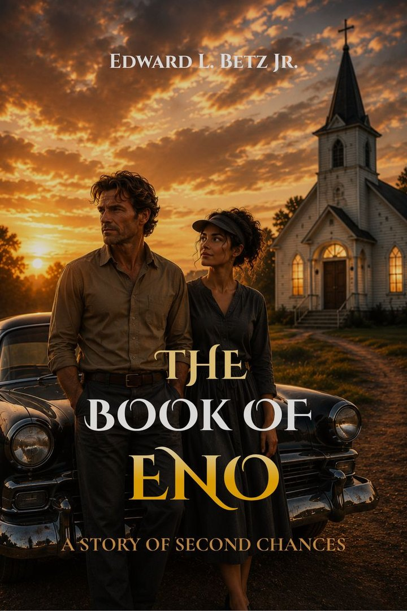

What developmental editing looks at
I read your manuscript as a reader first, then as an editor. Where attention drops, where an idea repeats and where a promise is not kept are the places I mark.
- Structure: the order of chapters and sections, and what each one is for
- Pacing: slow openings, uneven middles and reveals that arrive too early
- Argument and evidence in nonfiction, and character and plot clarity in fiction
- Repetition: ideas, phrases and points told more than once
- Gaps: where readers need a scene, a source or an example
What you get
For longer projects I can guide your revisions across several rounds. On The Book of Eno that meant a 24-page review, a Chapter 1 report and then an editorial review of the next draft.
- An editorial letter with chapter-by-chapter notes
- A clear order for your revisions, big issues first
- A list of lines and passages to keep exactly as written
- Honest, specific feedback, with questions flagged where I need your input
Who it suits
New drafts, and manuscripts that feel almost there but not quite. I work with first-time self-publishers, fiction writers, nonfiction and business authors, and academics in the United States and Nigeria.
An example from my sample projects
In a sample memoir, Chapter 1 previewed the whole book: its 14 pages introduced ideas that became Chapters 2, 3 and 4. I mapped each Chapter 1 section to the chapter that develops it and recommended what to keep, move or shrink, so the later chapters read as a payoff instead of a repeat.
In another sample, one idea, “confidence comes after action”, appeared in three chapters in nearly the same words. I gave each chapter a different job for it: plant it, show the fear of starting, and prove it with one real moment from the author’s own learning.
What authors say
“I highly recommend Tijani Uthman as a book editor and manuscript consultant. … He delivered exceptionally detailed, thoughtful, and constructive feedback that went far beyond what I expected. … Working with him felt collaborative and supportive, exactly what a writer needs when polishing a story with a meaningful message.”
Related projects

The Book of Enoby Edward L. Betz Jr. Extinction or Evolution?by Adam Altamery
Extinction or Evolution?by Adam Altamery The Decision to Stop Depending on OthersSample project
The Decision to Stop Depending on OthersSample project